일정이 바뀔 때마다, 완료일정을 좌우하는 일이 어디로 옮겨 갔는지 먼저 알려 주는 에이전트. 대화창에 "성능 시험이 재시험으로 3일 늦어졌어"라고 쓰면 에이전트가 CPM, 스케줄, 간트차트 창을 직접 열어 일하고, 사람은 마지막에 승인한다. R&D 실증 과제, 건설, 생산, 시스템 구축처럼 마감이 있는 모든 일정에 쓴다.
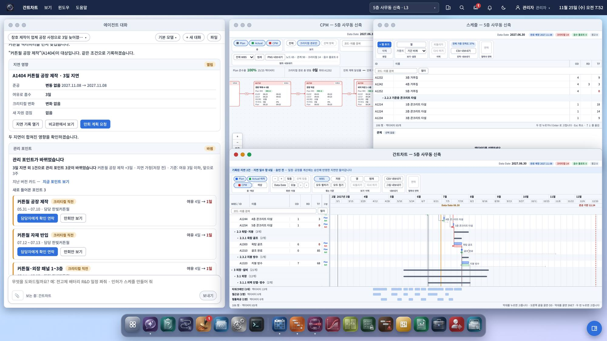
1에이전트 대화 · 말 한 줄로 요청
2CPM · 크리티컬 패스
3스케줄 · 작업 찾기
4간트차트 · 영향과 완료일정
실제 ChronOS 화면 한 장. 에이전트가 대화를 받아 CPM, 스케줄, 간트차트 창을 직접 열어 일한다.
에이전트 OS 시스템에이전트가 스케줄·간트·CPM 창을 직접 열어 일한다. 사람이 고른 작업을 에이전트도 보고, 사람은 에이전트가 한 일을 화면으로 따라간다.
AGI 시스템무엇을 할지 스스로 정한다. 도구 40여 개에서 골라 워크플로우를 짜고, 틀리면 다시 돌고, 잘 된 순서는 스킬로 남긴다.
에이전트가 직접 연락관리 포인트 작업의 담당자에게 문자를 보내고 AI 전화로 묻는다. 답은 근거 발화와 함께 일정에 반영된다. 보내기 전엔 사람이 승인한다.
참가자건설·플랜트 현장 PM
2026-11-12 ~ 11-25저장소 11-19 신규 · 한 줄 설치(31쪽)
github.com/sohnjangho/chronos데모 영상 〔링크〕
00 · 한 장 요약 · 운영팀이 요청한 네 가지
일이 늦어서가 아니라, 완료일정을 좌우하는 작업이 바뀐 걸 늦게 알아서 놓친다
ChronOS 는 완료일정을 좌우하는 작업을 변동마다 다시 계산하고, 바뀌었으면 먼저 알리고, 외부 영향을 찾고, 담당자에게 직접 묻는 일정 에이전트 OS 다. 운영팀이 요청한 네 가지의 답과 확인할 쪽을 한 장에 모았다.
1누가 어떤 문제로 얼마나 불편한지
심사 기준 · 문제 정의 30%
누가 일정을 맡은 PM. R&D·실증 과제, 건설·플랜트, 생산
어떤 문제 일정표를 처음 짤 때는 인허가 같은 절차가 빠지고, 변동이 들어올 때마다 완료일정을 좌우하는 작업(크리티컬 패스)이 바뀌는데 그것을 늦게 안다
얼마나 재시험 6주가 과제 종료 7개월 연장으로(가상 사례). 규제 특례 심의만 최대 120일, 인허가는 지역별 45~150일(조사). 공공 공사는 하루 지체상금 1,500만 원(300억 원 기준)
3–5쪽
2에이전트의 해결 방식
심사 기준 · 완성도 30%
한 바퀴 변동 감지 → 코드가 영향 계산 → 관리 포인트를 다시 뽑아 바뀌면 알림 → 그곳의 외부 영향 검색 → 담당자에게 문자·AI 전화 → 만회안 → 사람이 승인
에이전트 OS 에이전트가 앱 19개의 창을 직접 열어 일하고(도구 40여 개), 사람은 화면으로 따라가다 승인함에서 결정한다
시연과 검증 수소 연료전지 실증 과제로 6장면을 실제 앱에서 돌렸다. 서버 시험 8,306 · 화면 시험 2,167 · 실제 Liner 46단계 시나리오
6쪽 8–14쪽 16–27쪽
3Liner API 활용 방식
심사 기준 · Liner 활용 20%
Model = 두뇌 요청 이해, 일정 초안, 만회안 설명, 연락 글과 통화 요약. Router 를 cost · balanced · quality 로 나눠 쓴다
Search = 근거 새 관리 포인트에만 Premium Data · MCP · Search Agent 로 외부 영향을 출처와 함께 찾는다. 일정 초안의 인허가 처리 기간도 법령 검색으로 근거를 붙인다
나눈 경계 날짜는 코드가 계산하고, Liner 는 판단과 근거를 맡는다. 도구 호출 22/22, MCP 5/5
7쪽 15쪽
4다른 조직·직무로 확장할 가능성
심사 기준 · 확장성 20%
분야로 엔진과 한 바퀴는 그대로, 분야마다 볼 외부 자료만 바꾼다. R&D 실증 본 시연, 건설·생산 시연, 9개 분야
앱으로 원가·도면 검토 앱을 붙이면 같은 WBS 로 일정·원가·물량이 이어지고 에이전트가 전체를 관리
사람으로 협력사는 문자·전화로, 발주처는 승인 기록으로 참여
시간과 비용 옮겨 간 것을 아는 때: 주간 회의 → 변동 직후
28–30쪽
19앱 · 하나의 OS
40+에이전트 도구
5종Liner API 연결 (Model·Search·MCP·Visualization·Embeddings)
4:55시연 영상 · 실제 Liner
ChronOS · .EXE-THON 2026
01 · 문제 · 흔히 일어나는 장면
6주가 7개월이 된 과제
개발부터 실증까지 가는 정부 R&D 과제에서 흔히 일어나는 일정 실패를 가상 사례로 꾸몄다. 일정표에 없던 일과 옮겨 간 크리티컬 패스를 늦게 알아서 생기는 실패다.
1
재시험이면 6주. 여유 있으니 괜찮아.
성능 시험 재시험. 시험은 완료일정과 상관없는 일인 줄 알았다.
2
실증 설비 제작 끝. 다음 주 설치만 하면 된다.
설비는 계획대로 나왔다. 일정표의 다음 칸은 「설치」였다.
3
"실증특례 승인 없이는 설치 못 합니다. 심의만 3개월이에요."
그게 일정표에 없었는데…
빈 실증 부지. 인허가는 연구자가 짠 일정표 어디에도 없었다.
4
실증 운전 12개월을 못 채운다. 과제 종료 7개월 연장.
6주가 7개월이 됐다. 재시험은 시험 → 인허가 → 설치로 이어지는 크리티컬 패스 위에 있었다.
왜 이렇게 됐나
연구가 늦어서가 아니라, 늦게 알아서 완료일정을 놓쳤다.
01컷 1
지연의 영향을 재 보지 않는다
"여유 있다"는 감으로 넘겼다. 재시험이 무엇을 미는지 계산한 사람이 없다.
02컷 2
일정표에 없는 일은 아무도 관리하지 않는다
실증특례, 사용전 검사 같은 인허가 절차가 빠진 채로 일정이 굴러갔다.
03컷 3
외부 절차는 늦게, 전화로 안다
승인 기관의 요건과 기간은 일정표 밖에 있다. 설치하려던 날에야 들었다.
04컷 4
크리티컬 패스가 옮겨 가도 알려 주지 않는다
엑셀과 P6 는 계산은 해도 "어제와 무엇이 바뀌었나"를 말하지 않는다.
이해를 돕기 위한 연출 이미지와 가상 사례. Liner Images API(openai/gpt-image-2.6-sunburst)로 만들었다.
ChronOS · .EXE-THON 2026
01 · 문제 · 간트와 크리티컬 패스로 다시 보기
며칠 늦었느냐보다 어느 작업이 늦었느냐가 완료일정을 정한다
완료일정을 좌우하는 경로(크리티컬 패스)는 고정돼 있지 않다. 재시험 6주가 들어오자 성능 시험이 「시험 → 인허가 → 설치」로 이어지는 경로에 올라섰다. 그런데 인허가가 일정표에 없어서 그 경로 자체가 보이지 않았다.
가상 일정, 월 단위로 단순화. 노란 선은 그때 완료일정을 좌우하던 작업을 이은 크리티컬 패스. 빗금은 늘어난 6주.
사람도 도구도 놓치는 것
해야 할 일
사람
P6 등
엑셀
AI 챗봇
ChronOS
빠진 절차 찾기
경험
×
×
출처 없음
○
변동마다 다시 계산
주간 회의
○
×
날짜 틀림
○
옮겨 간 것을 알림
놓침
×
×
×
○
담당자 확인·기록
기록 없음
×
×
×
○
쉬운 용어
크리티컬 패스하루 늦으면 완료일정도 하루 늦는 작업들의 경로.
여유완료일정을 밀지 않고 늦출 수 있는 기간.
관리 포인트크리티컬이거나 여유가 거의 없는 가까운 작업. 변동마다 다시 뽑는다.
ChronOS · .EXE-THON 2026
01 · 문제 · 조사로 확인한 것
R&D 실증 일정은 연구 밖에서 늦어진다
앞의 사례는 가상이지만, 그 구조는 공개 자료에서 반복해 확인된다. 실증 단계로 가면 인허가, 특례 심의, 부처 간 조율처럼 연구자가 통제하지 못하는 외부 절차가 일정을 좌우한다.
120일
규제 특례를 받기까지 최대 120일
관계부처는 신청 접수일부터 90일 이내(1회 30일 연장 가능)에 특례심의위원회에 안건을 올린다. 업계는 이 기간을 시장 적기 진출의 장애로 꼽는다.
매일일보, 「개선 필요한 '규제샌드박스'…심사 기간 단축 필요」, 2024.06.30
자주발생
승인 뒤에도 실증이 바로 시작되지 않는다
"실증 목적에 맞지 않는 부가조건으로 인해 사업자들의 사업 개시와 실증 진행이 어려운 경우도 자주 발생." 반대가 심한 사안은 심의가 상당 기간 지연되는 사례도 있다.
국무조정실 · 정책브리핑, 「'규제샌드박스' 심의 지연 방지…」, 2024.08.01
45~150일
인허가 기간은 지역마다 3배 넘게 다르다
수소 인프라 구축의 가장 큰 애로는 인허가 지연이고(딜로이트), 정부의 수소생산기지 구축사업에서도 인허가 문제로 중단·지연이 빈번했다. 지역별 인허가 기간은 최소 45일에서 최대 150일.
기후에너지경제, 「'속도' 막는 수소 규제…」, 2025.12.10
몇년
R&D·실증 단계에서 인허가로 지연된다
"다양한 R&D 및 실증 단계에서 인허가 규제로 인해 지연." 액화수소 샌드박스는 규제특례 신청 등의 절차에 몇 년이 걸렸다고 업계가 말한다.
가스신문, 「수소 업계 R&D·실증단계서 규제 많아…」, 2024.09.24
58.0%
연구자 과반이 "실증 지원 체계가 부족하다"
실증·일반 연구자 설문에서 응답자의 58.0%가 연구개발 실증 투자가 체계적이지 못해 보완이 필요하다고 답했다(충분하다 10.8%). 법령 부처, 사업수행 부처, 지원기관이 서로 달라 소통이 원활하지 않다는 지적도 있다.
한국과학기술기획평가원(KISTEP), 「정부 연구개발 실증사업의 현황 분석 및 투자 전략 수립에 관한 연구」, 2018.12
그래서 일정에서는
조사에서 본 것
일정에 생기는 일
ChronOS 가 하는 일
인허가·특례 심의는 연구 밖의 작업
연구자가 짠 일정표에서 빠지기 쉽다
일정 초안을 만들 때 법령 검색(Liner)으로 처리 기간의 근거를 찾아 작업으로 넣는다
기간이 길고 들쭉날쭉(90~120일, 45~150일)
작은 연구 지연도 크리티컬 패스를 옮긴다
변동마다 다시 계산하고, 관리 포인트가 옮겨 가면 먼저 알린다
부처와 기관이 여럿, 소통이 어긋남
담당자 확인이 늦고 기록이 남지 않는다
에이전트가 담당자에게 먼저 묻고, 답과 근거를 기록한다
앞 사례의 숫자(실증특례 심의 약 3개월, 과제 7개월 연장)는 가상이다. 심의 기간은 위 조사의 범위(90~120일)에 맞춰 잡았다. 조사 자료는 규제샌드박스와 수소 분야가 많아, 모든 R&D 실증에 같은 숫자가 적용되지는 않는다.
ChronOS · .EXE-THON 2026
02 · 해법 · 노하우를 에이전트로
베테랑 PM이 하던 세 가지를 변동이 올 때마다 대신 한다
하나 · 다시 본다
지금 완료일정을 좌우하는 작업은 어디인가
변동마다 코드가 영향을 재고 관리 포인트를 다시 뽑는다. 바뀌었으면 카드로 알린다.
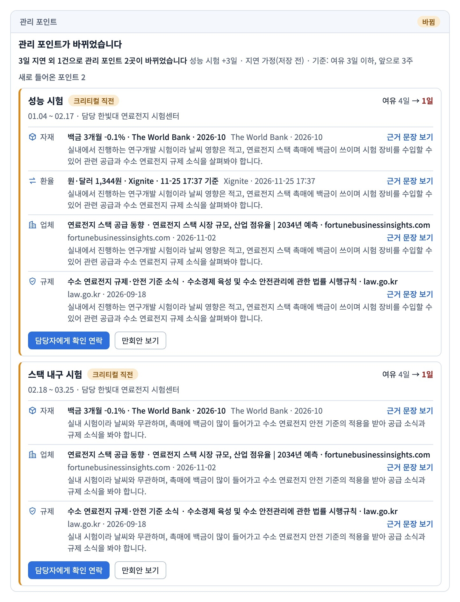
둘 · 따져 본다
이걸 당기면 완료일정이 당겨지나
당긴 일수 가운데 완료일정에 반영되는 일수와 그다음 좌우하는 작업을 코드가 계산한다.
셋 · 먼저 묻는다
그 작업의 담당자에게 먼저 확인한다
외부 영향을 출처와 함께 찾고, 문자와 AI 전화로 묻고, 답마다 근거를 남긴다.
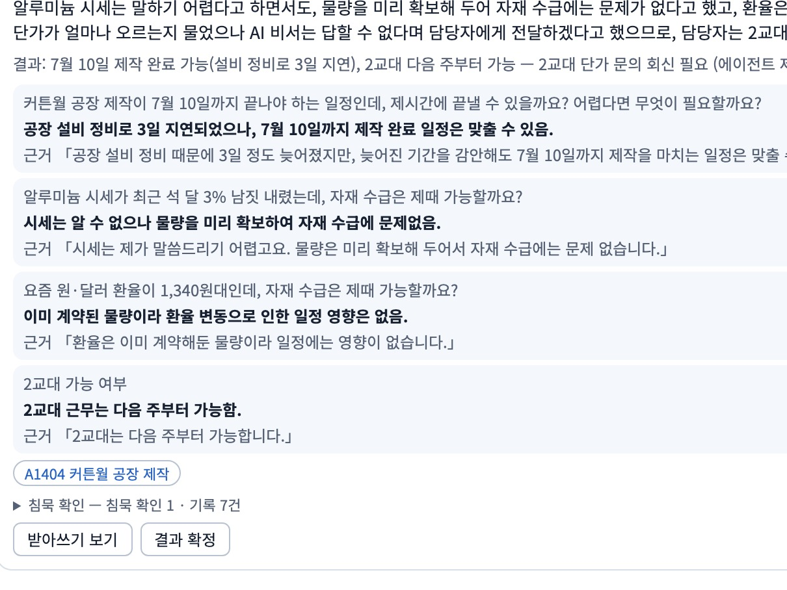
에이전트의 한 바퀴 변동 하나마다 이 고리가 한 번 돈다
1날짜는 코드만 공휴일, 선후 관계, 자원까지 엔진이 계산한다. AI 가 낸 날짜는 버린다.
2옮겨 갔는지 먼저 본다 변동마다 관리 포인트를 다시 뽑고, 바뀌었으면 카드로 알린다.
3그곳만 찾는다 새 관리 포인트에 대해서만 Liner Search 가 출처와 함께 찾으니 호출이 적다.
4직접 연락한다 연락 하네스 6가지 검사를 통과해야 문자와 AI 전화가 나간다.
5사람이 정한다 승인해야 일정이 바뀐다. 승인 기록과 버전이 남는다.
6안쪽 고리 각 단계 안에서 에이전트가 도구를 고르고 결과를 스스로 점검한다.
ChronOS · .EXE-THON 2026
02 · 해법 · Liner 를 어디에, 왜
CPM 이 볼 곳을 정하고, Liner 가 그곳의 일을 찾아온다
LINER MODEL
두뇌
요청을 알아듣고, 질문지를 만들고, 일정 초안을 쓰고 고치고, 만회안을 설명하고, 연락 글과 통화 요약을 쓴다. 현장 사진도 읽는다.
cost자주 도는 감시
balanced대화
quality만회안 판단
Router 전략을 일에 따라 나눠 쓴다. 그래서 쉬지 않고 돌아도 비용이 버틴다.
LINER SEARCH
근거
완료일정을 바꾸는 결정에는 출처가 있어야 한다. 새 관리 포인트가 생기면 그 작업에 대해서만 찾는다.
Premium Data 백금·구리·알루미늄 시세, 원·달러 환율
MCP 업계 소식, 법령, 업체 정보
Search Agent 근거가 된 문장과 링크
새 포인트에만 찾으니 호출이 적다.
실제로 불러 본 결과
22/22Model · Router 도구 호출, strict JSON
30개월Premium Data 금속 시세 · 원·달러
5/5MCP 법령 · 업체
15/15Visualization 차트 숫자 일치
뜻 검색Embeddings 자료함
Liner 가 아닌 것: 날짜 계산은 코드, 날씨는 기상청, 실시간 통화 음성은 Gemini Live(지연 시간 때문), 문자와 전화 통로는 한국AI통신.
한 바퀴의 단계마다 쓰는 Liner
단계
Liner
하는 일
① 변동 감지
Model · Router balanced
대화와 문자 속 변동을 알아듣고, 볼 작업과 쓸 도구를 고른다
④ 외부 영향
Search · Premium Data · MCP
새 관리 포인트에만 시세, 업계 소식, 법령을 출처와 함께 찾는다
⑤ 담당자에게 묻기
Model · Router balanced
문자 초안과 통화 요약을 쓰고, 답마다 근거 발화를 붙인다
⑥ 만회안
Model · quality · Visualization
만회안을 설명하고 비교 차트를 그린다. 차트 속 숫자는 코드가 대조한다
⑦ 기록
Embeddings
자료함과 지난 결정을 뜻으로 찾아 다음 판단에 쓴다
하지 않는 것
AI 가 날짜를 계산하지 않는다. AI 가 낸 날짜는 코드가 버린다.
자료가 없으면 숫자를 만들지 않는다. 「외부 자료 없음」으로 둔다.
못 읽은 사진에 숫자를 붙이지 않는다. 관리자가 사람 판독한다.
사람 승인 없이 일정을 바꾸지 않는다.
허락 없이 연락하지 않는다. 기본값은 「승인 받기」.
전화번호를 AI 모델에 주지 않는다.
ChronOS · .EXE-THON 2026
03 · 에이전트가 쓰는 OS
WOW 1 · 에이전트 OS
채팅창 하나가 아니라 OS. 워크플로우를 그 자리에서 짠다
에이전트는 자기 OS 의 창을 도구(ui.open_window)로 정확히 연다. 스크린샷을 보고 마우스를 흉내 내지 않아서 빠르고, 권한이 없는 창은 열지 못한다. 요청마다 단계가 하나씩 생기고, 누르면 도구·까닭·모델·비용이 나온다.
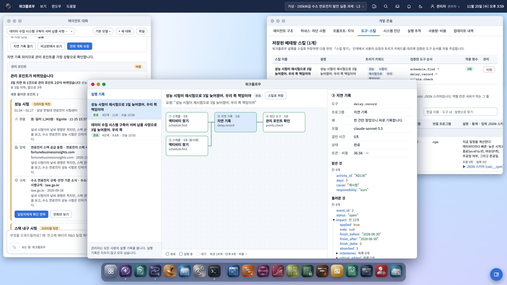
1요청
2워크플로우
3단계가 자란다
4단계 상세
5
6저장된 스킬
1요청 대화 한 줄. 에이전트가 할 일을 스스로 정한다.
2워크플로우 요청마다 단계가 하나씩 생긴다.
3단계가 자란다 작업 찾기 → 지연 기록 → 관리 포인트 → 영향.
4단계 상세 누르면 도구, 까닭, 모델, 비용, 받은 것과 돌려준 것.
5[스킬로 저장] 잘 된 순서를 스킬로 남긴다.
6저장된 스킬 비슷한 요청이 오면 에이전트가 꺼내 쓴다. 베테랑의 순서가 회사에 남는다.
Dock 의 앱 19개. 모두 같은 승인함, 하네스, 버전, 도구 등록부를 쓴다.
보인다에이전트가 한 일을 글로 설명받지 않고 화면에서 본다. 책임이 큰 일일수록 눈으로 확인해야 믿고 맡긴다.
같이 쓴다사람이 스케줄 창에서 고른 작업을 에이전트도 본다(「보는 중: 스케줄 · RD130」).
붙는다새 앱은 폴더 하나와 도구 등록으로 붙고, 붙는 순간 에이전트가 쓴다.
ChronOS · .EXE-THON 2026
04 · 실제로 도는 시연 · 장면 0
WOW 4 · AI 일정 초안
말 한 줄이 일정 초안이 된다
시연 일정은 「가상 · 100kW급 수소 연료전지 발전 실증 과제」다. 3쪽의 실패 사례와 같은 종류의 과제다. 아래 숫자는 모두 엔진이 계산했다. 시작은 한 줄이다. "100kW급 수소 연료전지 발전 실증 과제 공정표 만들어 줘."
1바로 그리지 않고, 질문지로 먼저 묻는다
2날짜는 코드가 계산 · 1회차 위반 0
3승인함에서 사람이 승인
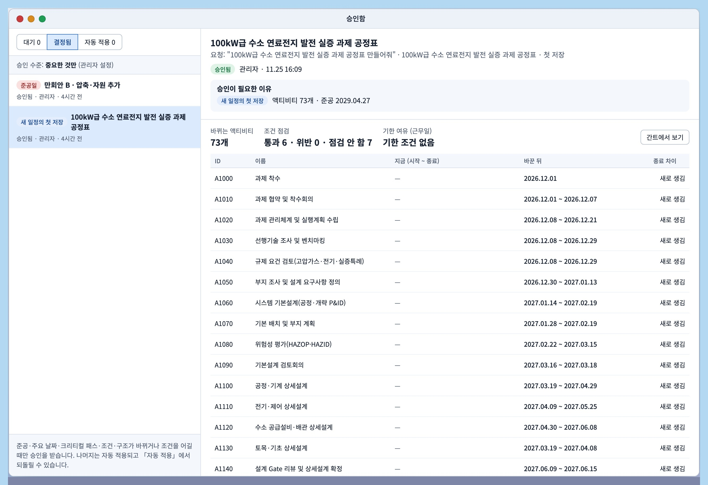
4간트에 그려진다 · 인허가 갈래까지
먼저 묻는다모자란 정보는 질문지로 묻고, 답하지 않은 질문은 적어 둔 가정대로 간다.
날짜는 코드가AI 는 작업과 기간과 관계만 쓴다. 날짜 계산과 규칙 위반은 코드가 잡는다. 실증 과제 초안 세 번(작업 68개, 72개, 73개) 모두 한 번에 통과.
인허가를 넣는다말하지 않아도 발전사업허가, 가스 안전 허가, 사용 전 검사를 넣고, 법령 검색(Liner)으로 처리 기간 근거를 붙인다. 질문지에 실증특례를 적으면 특례 심의도 들어간다.
ChronOS · .EXE-THON 2026
04 · 실제로 도는 시연 · 장면 1, 2
같은 3일인데, 관리 포인트가 바뀌었다
장면 1. "데이터 수집 시스템 구축이 3일 늦어졌어." 과제 종료도 관리 포인트도 그대로다. 여유가 18일에서 15일로 줄었을 뿐이다. 이어서 "성능 시험이 재시험으로 3일 늦어졌어." 이번에도 과제 종료는 그대로라 사람은 안심한다. 하지만 연구 갈래(성능 시험 → 내구 시험 → 설계 확정 → 스택 모듈 제작)의 여유가 4일에서 1일로 줄어 관리 포인트가 바뀌었다. 3쪽 사례에서 놓친 바로 그 순간이다.
장면 2. 에이전트가 「관리 포인트가 바뀌었습니다」 카드를 띄운다. 새 포인트에 대해서만 Liner Search 가 외부 영향을 찾는다. 6개월이 넘은 글은 쓰지 않고, 찾지 못하면 「외부 자료 없음」으로 둔다. [근거 문장 보기]를 누르면 출처 문장이 열린다.
1데이터 수집 +3일 · 변화 없음
3새 포인트에만 외부 영향 · 시세, 환율, 업계 소식, 법령
4근거 문장 · 법령 줄을 펼친 모습
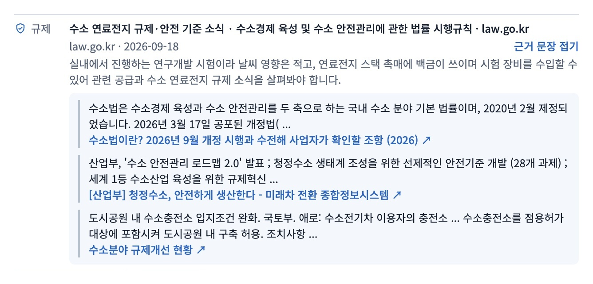
2성능 시험 +3일 · 관리 포인트가 바뀜
ChronOS · .EXE-THON 2026
04 · 실제로 도는 시연 · 장면 3
WOW 3 · AI 문자·전화
에이전트가 담당자에게 먼저 묻는다
[담당자에게 확인 연락]을 누르면 에이전트가 물을 것을 써 오고, 사람이 고친 뒤 보낸다.
1에이전트가 문자 초안을 쓴다
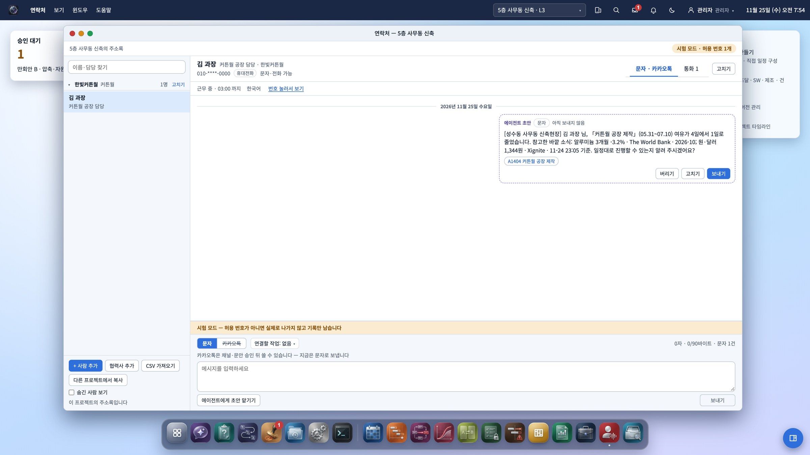
1
2사람이 승인하면 나가고, 답장이 붙는다
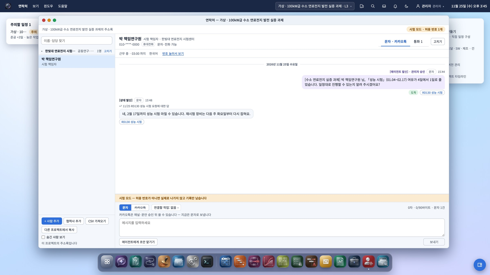
2
2
3AI 전화 · 통화하며 받아쓴다
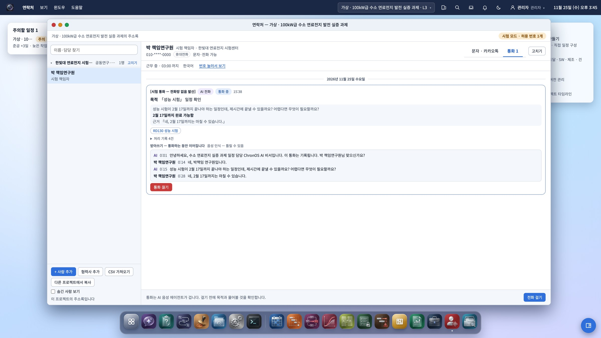
3
4질문마다 답과 근거 발화
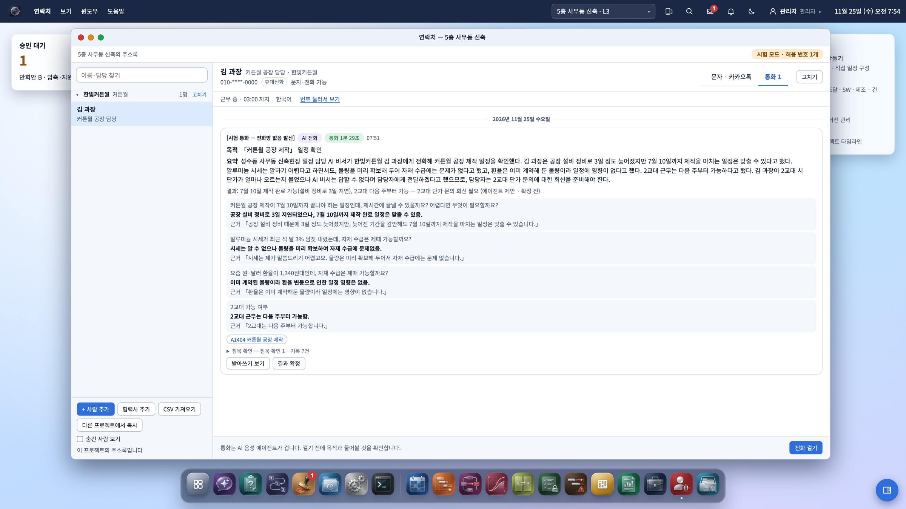
4
1·2 확대 에이전트가 쓴 문자와 받은 답장
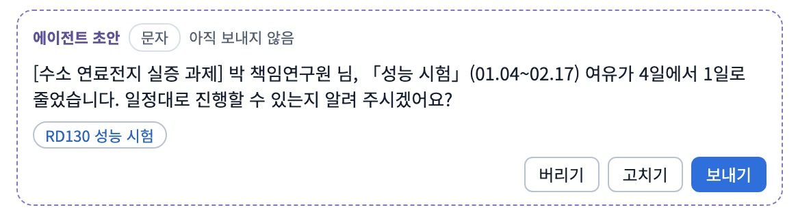
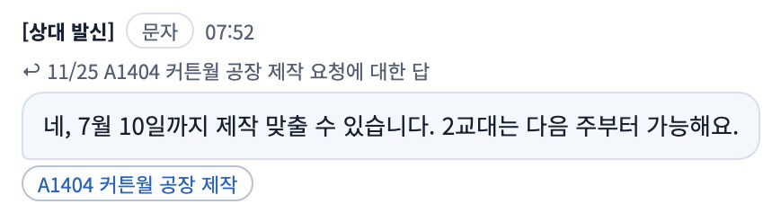
4 확대 질문마다 답, 그리고 근거가 된 발화
사람이 정한다무엇을 묻고 무엇을 말하지 않을지 사람이 고친다. 보내기 기본값은 「승인 받기」.
번호를 모른다AI 모델은 전화번호를 보지 않는다. 연락처 id 와 이름만 보고 번호는 코드가 붙인다.
근거가 남는다40초 통화 뒤 받아쓰기와 답을 대조한다(질문 2개, 답 2개). 근거 없는 답은 사실로 남기지 않는다.
문자·통화 화면은 촬영용 사본의 연출이다(가상 번호 기록, 11-25 시험 통화 기록, 실제 발송 없음). 실제 전화망 통화는 따로 시험해 첫 응답 약 1.1초, 받아쓰기, 걸려 온 전화 받기를 확인했다.
ChronOS · .EXE-THON 2026
04 · 실제로 도는 시연 · 장면 4
WOW 2 · 5일 중 1일
당기기 전에 묻는다. 이걸 당기면 며칠이 줄어드나.
"실증 설비 제작을 5일 당기면?" 에이전트가 코드로 다시 계산해 바로 답한다. 당긴 5일 가운데 과제 종료에 반영되는 날은 하루. 이미 연구 갈래의 성능 시험이 종료를 좌우하고 있어서다. 그래서 다음에 볼 곳까지 알려 준다.
1"5일 당기면?" → 5일 중 1일 · 성능 시험이 늦어지기 전에는 4일
1/5
당긴 5일 중 과제 종료에 반영되는 날
과제 종료 2028-06-30 → 06-29
2관리 포인트 창에서 성능 시험부터
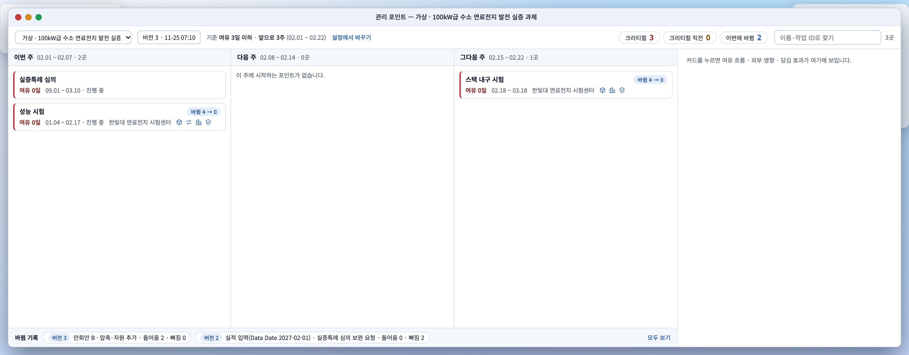
힘 쏟기 전에인력이나 비용을 더 넣기 전에 효과를 숫자로 본다. 같은 5일이 성능 시험 지연 전에는 4일(06-30 → 06-26)이었다.
계산은 코드AI 는 날짜를 셈하지 않는다. 확인용 계산이라 일정은 바뀌지 않는다.
다음 행동까지다음 결정 줄은 성능 시험 → 내구 시험 → 설계 확정 → 스택 모듈 제작. 외부 영향과 담당자 연락으로 이어진다.
ChronOS · .EXE-THON 2026
04 · 실제로 도는 시연 · 장면 5
대안을 견주고, 사람이 결정한다
만회안 A 「병행 우선」은 13근무일을 당기지만 허가 전 제작, 시험 전 설계라 재작업 위험이 크다. 만회안 B 「압축·자원 추가」는 고압가스 시설 설치 허가를 30일에서 24일로, 스택 내구 시험을 25일에서 20일로 줄여 과제 종료를 06-30 에서 06-22 로 당긴다(기한 여유 6일). 비교판에서 견주고 승인함에서 사람이 B 를 승인한다. 승인하면 새 버전이 되고 에이전트는 관리 포인트를 다시 뽑는다. 한 바퀴가 닫힌다.
1만회안 카드 · A 병행 우선, B 압축·자원 추가
3승인함에서 사람이 승인
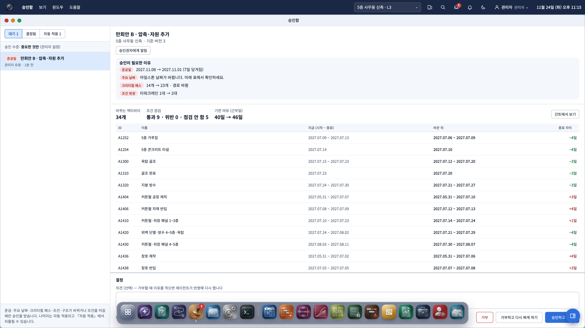
2비교판 요약 · 승인 뒤 현재 일정 06-22(만회안 B), 견줘 본 만회안 A 06-13
4다시 뽑은 관리 포인트 · 이번 주, 다음 주, 그다음 주
ChronOS · .EXE-THON 2026
04 · 실제로 도는 시연 · ChronOS 가 있는 밤
같은 날, 다른 밤
같은 과제로 돌아간다. 이번에는 일정을 짜는 날부터 ChronOS 가 있다.
1
ChronOS · 법령 검색 근거 [1]인허가 작업을 일정에 넣었습니다. 실증특례 승인 · 사용전 검사
짤 때 찾는다. 일정 초안을 만들며 법령 검색(Liner)으로 인허가 처리 기간의 근거를 찾아, 그 근거와 함께 인허가 작업을 일정에 넣었다.
2
ChronOS관리 포인트가 바뀌었습니다. 시험 → 인허가 → 설치가 완료일정을 좌우합니다.
다시 본다. 재시험 6주가 들어온 그 자리에서 크리티컬 패스를 다시 계산했다.
3
ChronOS · 문자중간 시험성적서로 먼저 접수할 수 있을까요?
"네, 보완 제출 조건으로 접수됩니다."
먼저 묻는다. 에이전트가 인허가 담당자에게 먼저 문자로 물었다. 답과 근거가 기록으로 남았다.
4
인허가는 시험과 나란히. 실증 운전 12개월 확보, 완료일정 그대로.
사람이 정한다. 먼저 접수하는 안은 승인함에서 사람이 골랐다. 일정은 승인한 뒤에 바뀌었다.
그날 밤
ChronOS 가 있는 밤
인허가
설치하려던 날 전화로 앎
일정을 짤 때 법령 근거와 함께 들어감
재시험 6주
"여유 있다"로 넘김
크리티컬이 인허가 쪽으로 옮겨 간 것을 바로 알림
인허가 담당
뒤늦게 통화, 기록 없음
에이전트가 먼저 묻고, 답과 근거를 기록
결과
과제 종료 7개월 연장
완료일정 그대로
이해를 돕기 위한 연출 이미지와 가상 사례다. 같은 흐름은 9~13쪽에서 가상 수소 연료전지 실증 과제로 실제 앱에서 돌렸다(문자 답장 장면은 연출). Liner Images API(openai/gpt-image-2.6-sunburst)로 만들었다.
ChronOS · .EXE-THON 2026
05 · 구조와 검증 · 에이전트 로직
변동 하나가 들어와 결정이 되기까지
1틀리면 다시 돈다 판단 → 도구 실행 → 자가 점검. 결과가 규칙에 어긋나면 고쳐서 다시, 최대 12단계.
2날짜는 코드만 에이전트는 계산을 엔진에 맡기고, 엔진은 4겹 하네스로 규칙을 확인한다.
3새 포인트에만 Liner Search 관리 포인트가 새로 생긴 작업만 외부 영향을 찾는다. 6개월 넘은 글은 쓰지 않는다.
4연락은 문을 지나야 나간다 시험 모드, 차단, 근무시간, 상한, 권한, 중복. 6가지를 통과해야 문자와 전화가 나간다.
5바깥 고리가 닫힌다 만회안 → 승인함 → 새 버전 → 다시 계산. 승인한 순간 관리 포인트를 다시 뽑는다.
에이전트 루프는 틀리면 다시 돈다(최대 12단계). 날짜가 필요한 순간마다 코드 엔진에 맡기고, 엔진은 4겹 하네스(기본, 분야, 내 규칙, 입력)로 규칙을 확인한다. 관리 포인트가 새로 생기면 그 작업에 대해서만 Liner Search 가 움직인다. 연락은 여섯 가지 검사를 통과해야 나가고, 통화가 끝나면 받아쓰기와 답을 대조한다. 이 흐름은 개발 콘솔의 「실행 추적」에 단계마다 시각, 도구, 모델, 비용과 함께 남는다.
ChronOS · .EXE-THON 2026
05 · 구조와 검증
구조
1날짜는 여기서만 일정 엔진(코드)이 CPM, 자원, 지연 영향, 관리 포인트를 계산한다.
2규칙으로 막는다 4겹 하네스와 연락 규칙. 승인 없이 일정이 바뀌거나 연락이 나가지 않는다.
3Liner 5종 Model·Router, Search, MCP, Visualization, Embeddings 를 일에 맞춰 쓴다.
4Liner 가 아닌 것 실시간 통화 음성은 지연 시간 때문에 Gemini Live, 통신은 한국AI통신, 날씨는 기상청.
만든 것과 설계만 된 것 2026-11-25 배포본 기준(67694fd, 실서버 반영 19:12)
영역
동작함
설계만
일정 엔진
CPM, 자원 맞춤, 지연 영향, 만회안, 관리 포인트, 당김 효과
-
에이전트
질문지, 생성-점검-고침, 워크플로우와 스킬 저장, 도구 40여 개, Computer Use 창 전환
스킬 목록 화면
안전장치
4겹 하네스, 승인함, 버전, 연락 하네스, 사람 판독 넘기기
팀 단위 세부 권한
근거
자료함, Liner 검색, 외부 영향, 출처 문장
스캔 PDF 인식
현장·연락
현장 점검, 문자, AI 전화 걸기와 받기, 여러 언어
카카오 알림톡 실발송
가져오기·보고
엑셀·CSV, 월간·분기 보고서(회사 양식 학습)
P6·MS Project 변환
검증
8,306서버 자동 시험 통과
2,167화면 자동 시험 통과
46단계실제 Liner 로 돌린 업무 시나리오(11-24)
1.1초실제 전화망 통화 첫 응답
자동 시험은 11-25 최신 코드(67694fd)를 깨끗한 사본에서 다시 돌린 값이다(실패 0, 타입 검사·린트 오류 0건). 실제 Liner 호출 수치(46단계, 22/22, 5/5, 15/15)는 11-24 측정이다. 심사용 키로 직접 돌려 보는 방법은 31쪽. 시연 장면은 실제 Liner 로 두 번 리허설했다. 사진 판독은 공개 라이선스 현장 사진 10장으로 두 모델을 견줘, 숫자를 지어내지 않는 쪽을 골랐다.
ChronOS · .EXE-THON 2026
06 · 프로그램 설명
ChronOS 의 앱 19개
모든 앱이 같은 승인함, 하네스, 버전, 도구 등록부를 쓴다. 사람이 직접 열어 써도 되고, 에이전트가 대화 중에 열어 쓰기도 한다. 다음 쪽부터 앱마다 실제 화면과 기능, 에이전트가 그 앱을 쓰는 방식을 적었다.
시스템 · 7
일을 시키고, 보고, 승인한다
01 에이전트 대화 02 질문지 03 워크플로우 04 승인함 05 탐색기 06 설정 07 개발 콘솔(관리자)
일정 · 9
계산하고, 견주고, 기록한다
08 스케줄 · 09 간트차트 10 CPM · 11 공정률(현장 점검) 12 관리 포인트 · 13 비교판 14 조건·규칙 · 15 지연 기록 16 보고서
연결 · 3
현장과 사람에 닿는다
17 프로젝트 관리 18 연락처(문자, AI 전화) 19 자료함
기기마다
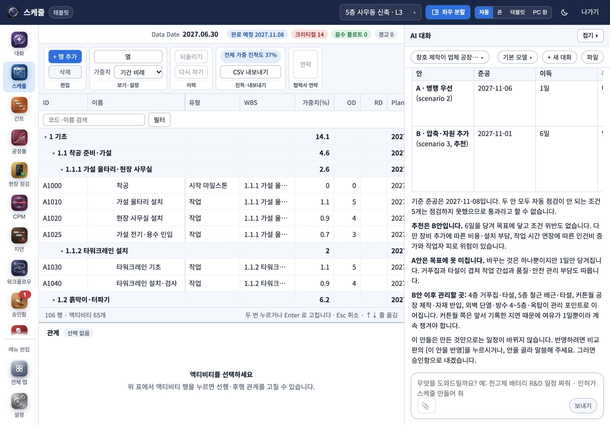
태블릿 (iPad Pro 11, 가로) 좌우 분할. 왼쪽 스케줄, 오른쪽 AI 대화. 답 속 표는 옆으로 밀어 본다.
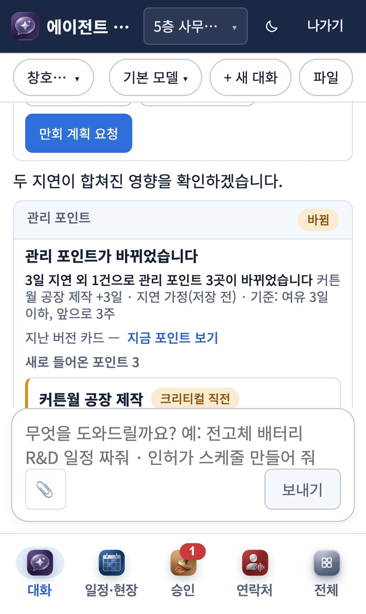
폰 · 대화
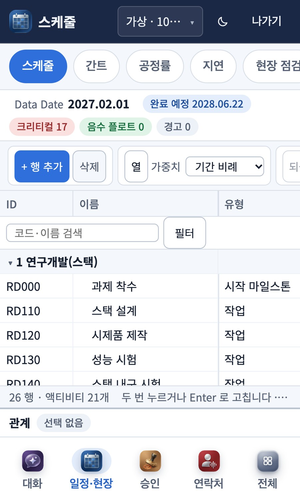
폰 · 스케줄
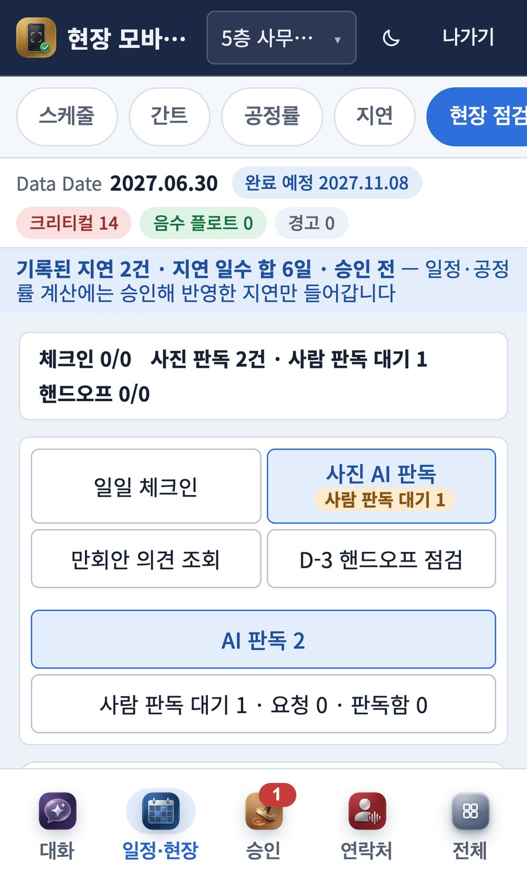
폰 · 현장 점검
폰 (iPhone 15 Pro) 아래 탭 5개. 현장 계정은 현장 점검, 일정, 현장 AI 만 본다.
PC 창을 여러 개 띄우는 OS 화면(1쪽, 8쪽). 에이전트가 창을 차례로 연다.
ChronOS · .EXE-THON 2026
06 · 프로그램 설명 · 시스템 앱
01
에이전트 대화
말 한 줄로 일을 시키는 곳. 결과는 글이 아니라 카드로 돌아온다.
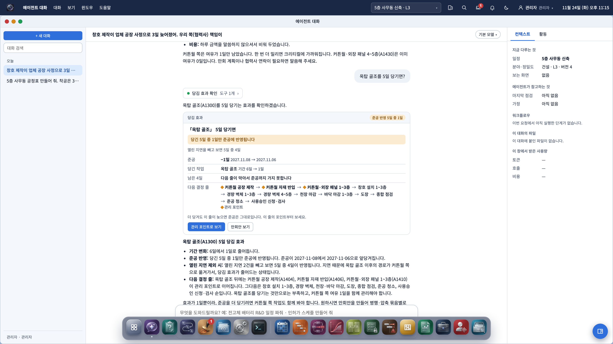
1
2
3
4
1말 한 줄 요청 "실증 설비 제작을 5일 당기면?"
2결과 카드 당김 효과·지연 영향·만회안·근거가 카드로
3대화 정보 다루는 일정, 보는 화면, 가정, 사용량
4Dock 앱 19개 모든 앱이 같은 승인함과 도구 등록부를 쓴다
모든 일의 출발점. 여기서 받은 요청으로 다른 창을 연다.
02
질문지
일정을 만들기 전에 모자란 정보를 묻는 창.
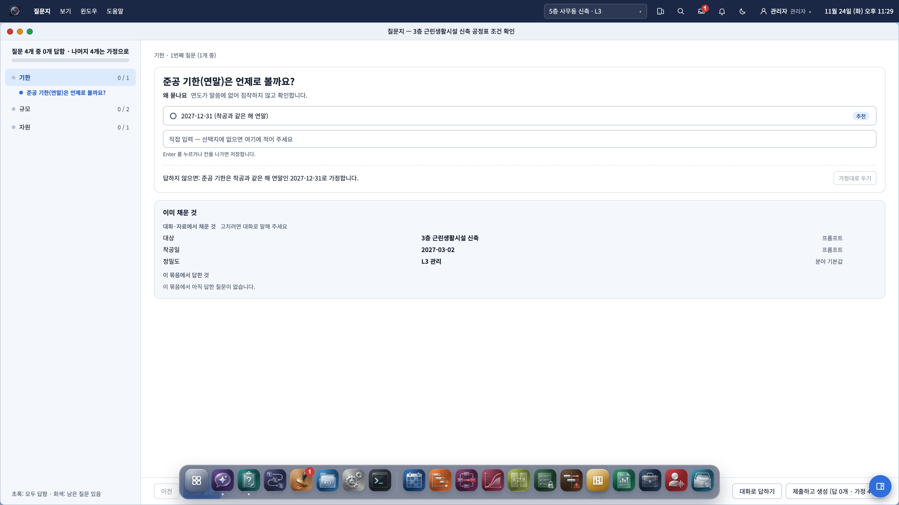
1
2
3
4
5
1질문 묶음 기한·규모·자원별로 남은 질문
2질문과 「왜 묻나요」 묻는 까닭을 함께 보인다
3추천 선택지 고르거나 직접 입력
4답하지 않으면 가정 가정은 적어 두고 넘어간다
5이미 채운 것 대화와 자료에서 미리 채운 칸
질문이 셋 이상이면 에이전트가 이 창을 띄운다.
ChronOS · .EXE-THON 2026
06 · 프로그램 설명 · 시스템 앱
03
워크플로우
에이전트가 짠 단계를 그래프로 보여 주고, 잘 된 순서를 스킬로 저장한다.
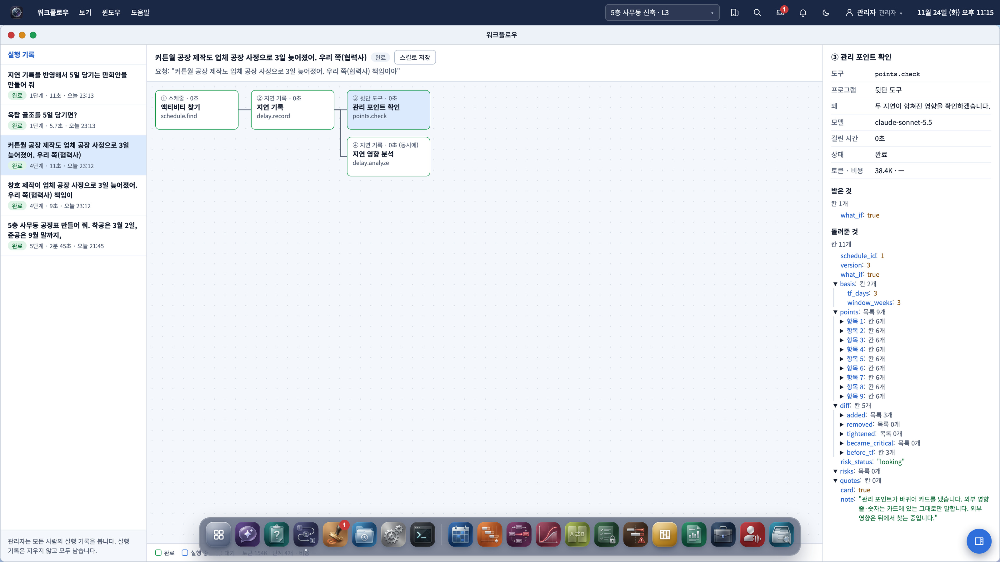
1
2
3
4
1실행 기록 요청마다 몇 단계, 몇 초
2단계 그래프 찾기 → 기록 → 확인 → 분석이 자란다
3단계 상세 도구, 까닭, 모델, 받은 것과 돌려준 것
4[스킬로 저장] 다음 비슷한 요청에 다시 쓴다
「워크플로우 창만」 모드에서는 이 창 하나로 진행을 보여 준다.
04
승인함
일정을 바꾸는 결정은 여기서 사람이 한다.
1
2
3
4
1대기 건 만회안 B · 관리자 요청
2승인이 필요한 이유 완료일, 주요 날짜, 크리티컬, 조건 변경
3바뀌는 작업 표 지금 → 바뀐 뒤, 종료 차이
4승인 · 거부 [승인하고 반영] [거부하고 다시 짜게 하기]
에이전트는 올리기만 하고 승인하지 못한다.
ChronOS · .EXE-THON 2026
06 · 프로그램 설명 · 시스템 앱
05
탐색기
일정 파일과 버전을 보관하는 곳.
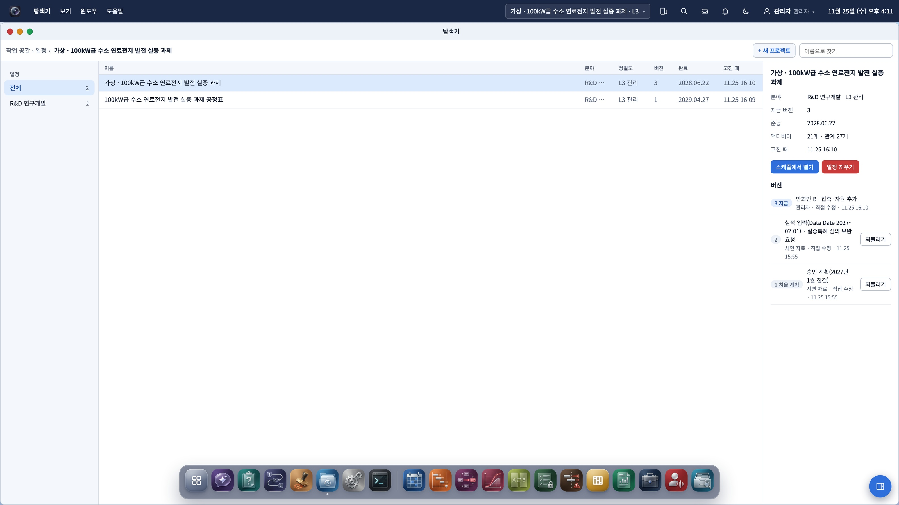
1
2
3
4
1분야별 일정 R&D 연구개발 · 건설 · 생산
2일정 목록 분야, 정밀도, 버전, 완료일
3일정 정보 [스케줄에서 열기]
4버전과 되돌리기 옛 버전은 모두 남는다
일정 목록과 버전을 읽는다.
06
설정
개인 화면 설정과 관리자용 연결·정책.
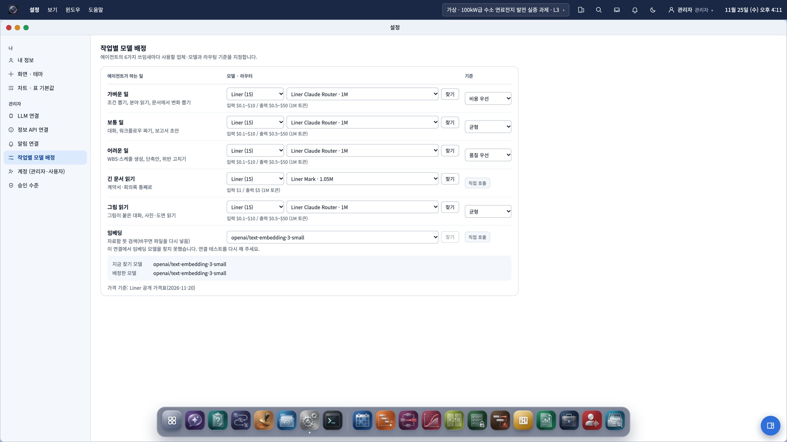
1
2
3
4
1관리자 메뉴 LLM·정보 API·알림 연결, 계정, 승인 수준
2작업별 모델 배정 6가지 쓰임새마다 Liner 모델
3Router 기준 비용 우선 · 균형 · 품질 우선
4임베딩 자료함 뜻 검색
연결과 권한은 관리자만 바꾼다.
ChronOS · .EXE-THON 2026
06 · 프로그램 설명 · 시스템 앱 · 일정 앱
07
개발 콘솔
에이전트의 속을 들여다보는 곳(관리자).
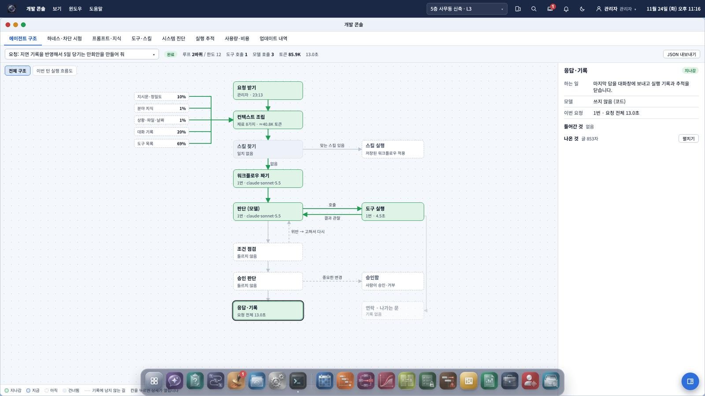
1
2
3
4
1탭 구조, 하네스 시험, 실행 추적, 사용량
2이번 요청 루프, 도구 호출, 모델 호출, 토큰
3에이전트 구조 요청 → 조립 → 워크플로우 → 판단 ↔ 도구 → 점검 → 승인
4단계 상세 하는 일, 모델, 이번 요청 값
이번 요청이 어느 길로 돌았는지 그대로 남긴다.
08
스케줄
작업을 표로 보고 직접 고친다. 날짜는 모두 코드가 계산한 값이다.
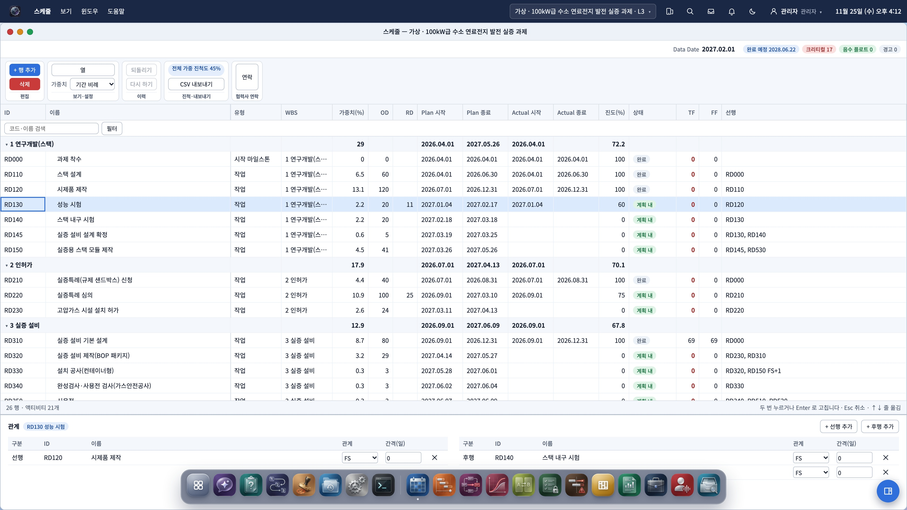
1
2
3
4
1편집 도구 행 추가, 되돌리기, CSV, 협력사 연락
2Data Date · 요약 완료 예정, 크리티컬, 음수 플로트
3작업 행 Plan·Actual·진도·TF·FF·선행
4관계 패널 선행·후행 FS/SS/FF/SF + 간격
요청 속 작업을 여기서 찾아 보여 준다.
ChronOS · .EXE-THON 2026
06 · 프로그램 설명 · 일정 앱
09
간트차트
막대로 계획과 실적을 겹쳐 본다.
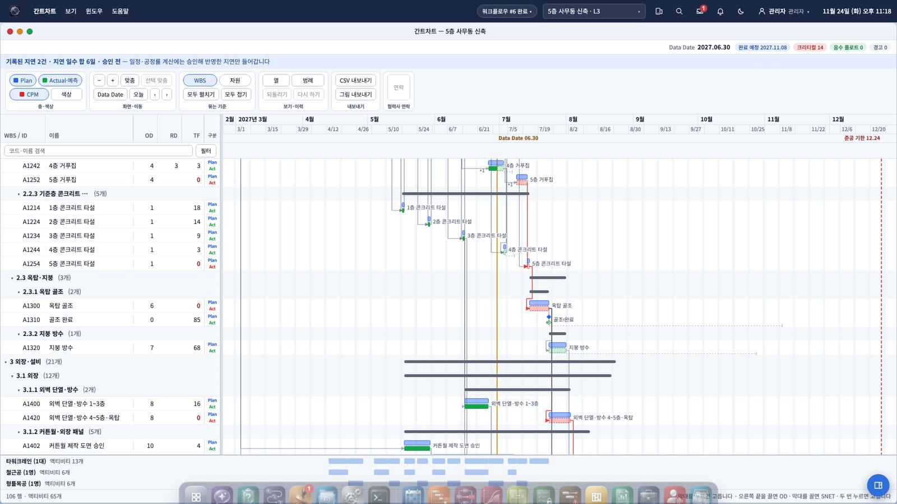
1
2
3
4
5
1요약 띠 Data Date · 완료 예정 · 크리티컬 수
2층 고르기 Plan / Actual·예측 / CPM
3묶는 기준 WBS / 자원
4크리티컬 막대 빨강 테두리 · 성능 시험 → 내구 시험 → 설계 확정
5자원 줄 시험 장비·측정 장비 사용량
만회안과 조건 변경을 점선으로 미리 그린다.
10
CPM
작업을 카드로, 관계를 화살표로 그린 네트워크도.
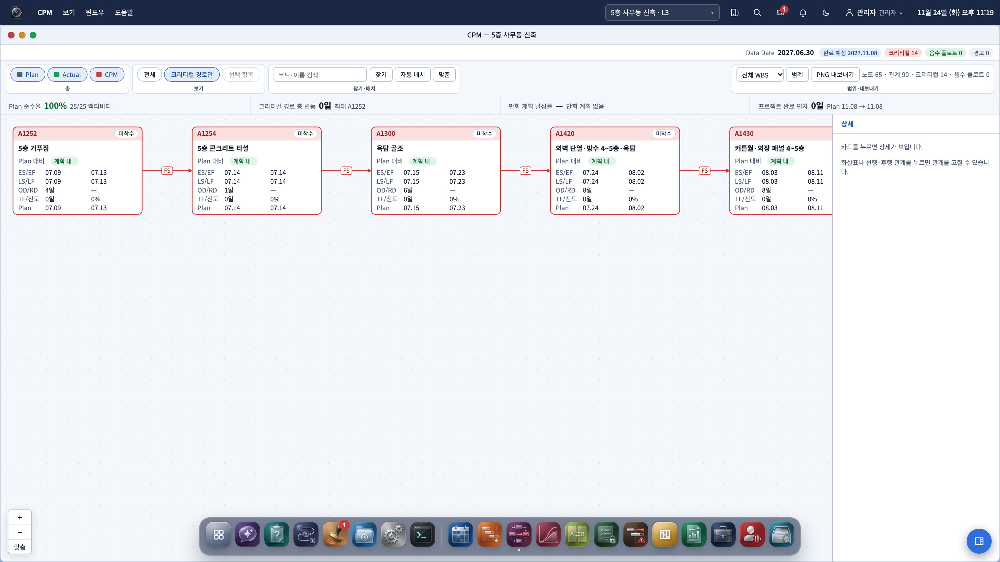
1
2
3
4
1층 고르기 Plan / Actual / CPM
2위 요약 Plan 준수율, 크리티컬 변동, 완료 편차
3크리티컬 카드 체인 ES/EF, LS/LF, OD/RD, TF
4상세 패널 카드·화살표를 누르면 관계를 고친다
좌우하는 작업이 왜 그 줄인지 화살표로 보여 준다.
ChronOS · .EXE-THON 2026
06 · 프로그램 설명 · 일정 앱
11
공정률 · 현장 점검
계획 대비 실적 대시보드와 현장 협업 허브.
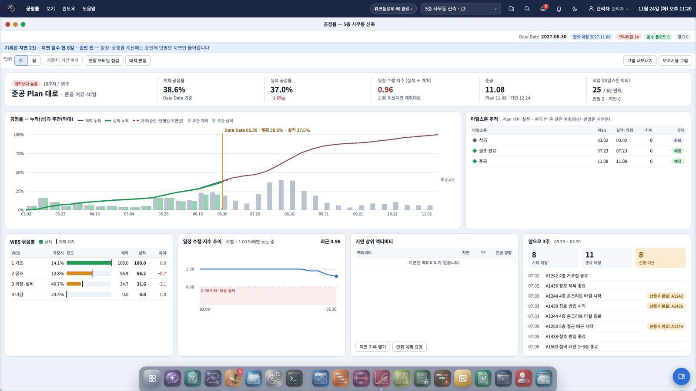
1
2
3
4
5
1핵심 지표 계획·실적 공정률, SPI, 완료 예정, 작업
2S-커브 누적과 주간, 예측
3마일스톤 Plan · 실적 · 차이
4앞으로 3주 시작·종료 예정과 선행 미완
5현장 모바일 점검 체크인·사진 판독·D-3 핸드오프
사진을 읽되, 못 읽으면 숫자를 붙이지 않고 넘긴다.
12
관리 포인트
지금 완료일정을 좌우하는 작업을 주별로 본다.
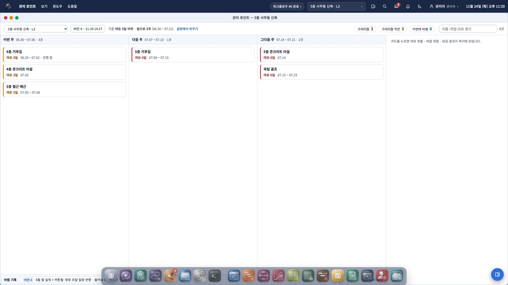
1
2
3
4
1기준 여유 3일 이하 · 앞으로 3주
2주별 보드 이번 주 · 다음 주 · 그다음 주, 작업마다 여유
3요약 크리티컬 · 직전 · 이번에 바뀜
4바뀜 기록 버전마다 들어오고 빠진 작업
변동마다 다시 뽑고, 바뀌면 카드로 먼저 알린다.
ChronOS · .EXE-THON 2026
06 · 프로그램 설명 · 일정 앱
13
비교판
여러 안을 같은 척도로 견준다.
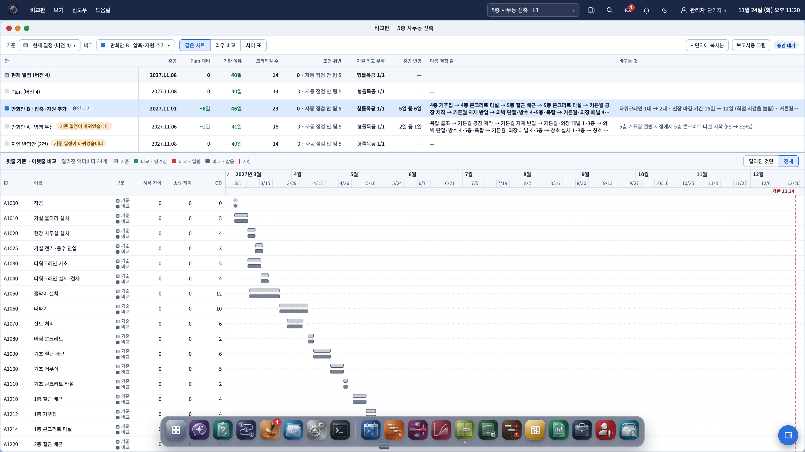
1
2
3
4
1보기 전환 같은 차트 / 좌우 비교 / 차이 표
2만회안 A 06.13 · 13근무일 당김 · 기준 일정과 견줌
3완료일 반영 당긴 일수 중 완료일정에 반영되는 날(27일 중 13일)
4겹쳐 비교 기준과 비교안을 같은 간트에
만회안을 이 창에 나란히 띄운다.
14
조건·규칙
일정에 걸린 조건을 4겹으로 보고, 바꿔 미리 본다.
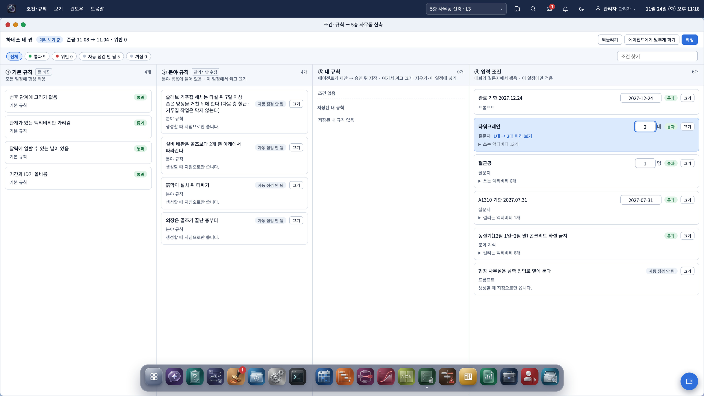
1
2
3
4
5
1미리 보기 띠 06.22 → 06.22 · 위반 1(기한보다 4일 늦음)
2① 기본 규칙 모든 일정에 항상
3② 분야 규칙 분야 묶음에서(이 과제는 없음)
4③ 내 규칙 에이전트 제안 → 사람 승인
5④ 입력 조건 완료 기한 06-30 → 06-16 미리 보기 → 위반
규칙은 제안만 한다. 쌓는 것은 사람의 승인이다.
ChronOS · .EXE-THON 2026
06 · 프로그램 설명 · 일정 앱
15
지연 기록
늦어진 사건을 기록하고 영향을 본다.
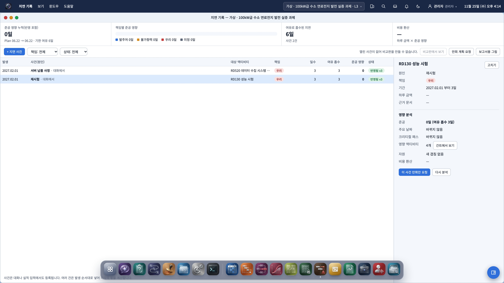
1
2
3
4
1누적 지표 완료일 영향, 책임별, 여유 흡수, 비용 환산
2사건 목록 원인, 대상, 책임, 일수, 완료일 영향
3영향 분석 완료일 0일(여유 흡수 3일), 크리티컬 그대로
4다음 행동 [비교판에서 보기] [만회 계획 요청]
"3일 늦어졌어" 한 줄을 사건으로 기록하고 영향을 잰다.
16
보고서
월간·분기 보고서를 회사 양식대로 쓴다.
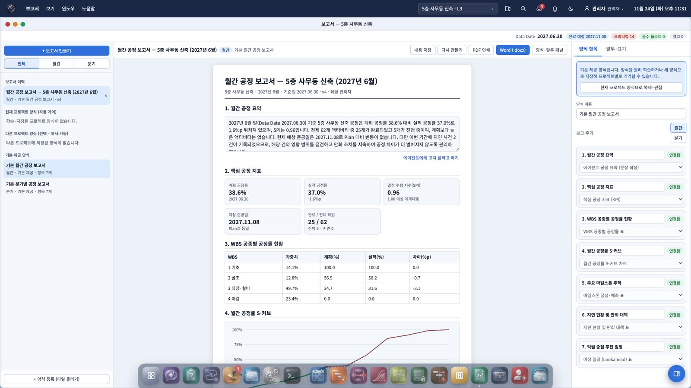
1
2
3
4
5
1양식 지난 보고서를 올리면 양식으로 기억
2보고서 본문 요약·지표·WBS·S-커브
3AI 에게 고치기 블록마다 고치고 「다음에도 기억」
4양식 항목 항목마다 연결된 데이터
5내보내기 PDF · Word
숫자는 코드 값만 쓰고, 문장만 쓴다.
ChronOS · .EXE-THON 2026
06 · 프로그램 설명 · 연결 앱
17
프로젝트 관리
AI 가 통화·문자에서 쓰는 프로젝트 기본 정보.
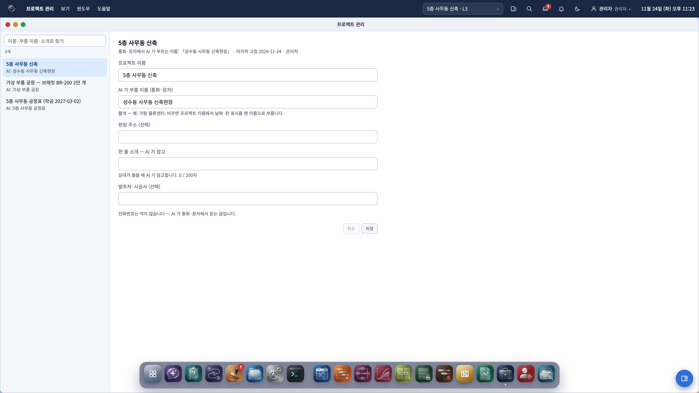
1
2
3
4
1프로젝트 목록 프로젝트마다 AI 가 부를 이름
2AI 가 부를 이름 「수소 연료전지 실증 과제」
3소개 · 발주처 상대가 물을 때 참고
4번호는 적지 않는다 전화번호는 AI 에 주지 않는다
통화 첫마디에서 이 이름으로 자신을 소개한다.
18
연락처
협력사·기관 주소록과 문자·AI 전화.
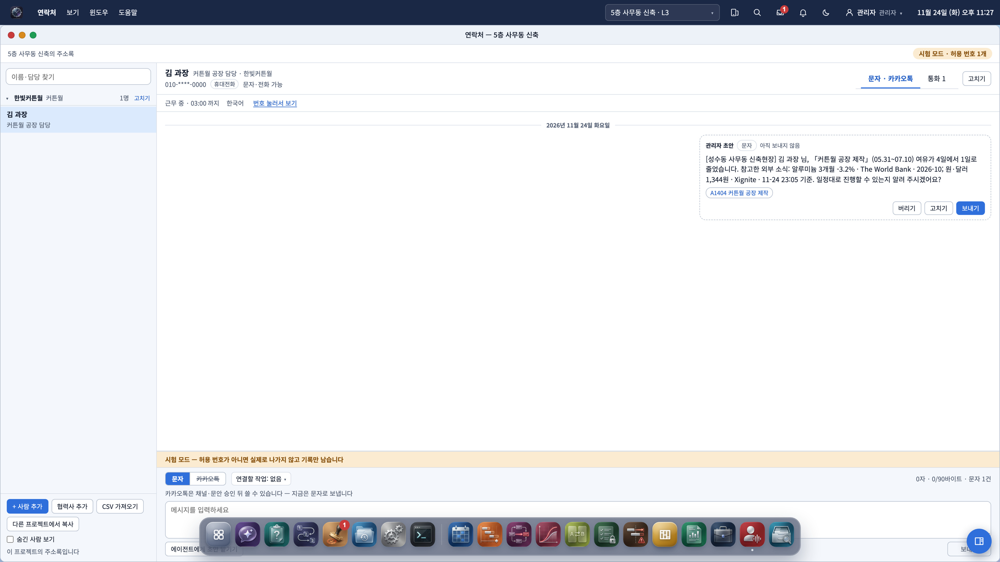
1
2
3
4
5
1주소록 프로젝트별 협력사·기관
2상대 정보 가린 번호, 근무시간, 언어
3에이전트 발신 사람이 승인해 보낸 문자
4시험 모드 허용 번호가 아니면 나가지 않는다
5문자 · 통화 통화 탭에 통화 카드와 받아쓰기
물을 것을 써 오고, 통화가 끝나면 답과 근거를 카드로 남긴다.
ChronOS · .EXE-THON 2026
06 · 프로그램 설명 · 연결 앱
19
자료함
대화로 올린 문서·사진·일정표를 AI 가 분류해 둔 창고.
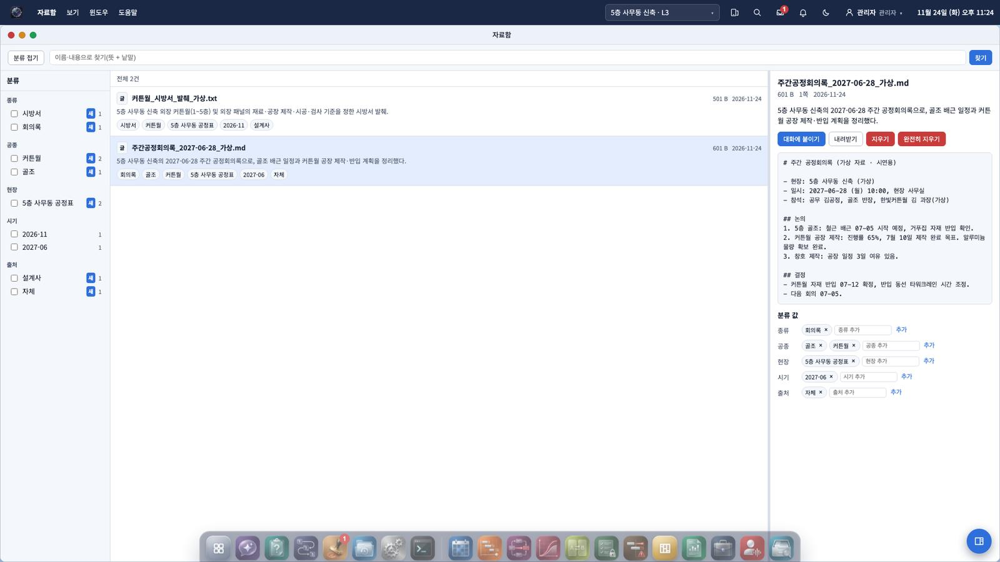
1
2
3
4
5
15축 분류 종류 · 작업 분야 · 프로젝트 · 시기 · 출처
2찾기 뜻과 낱말로(Liner Embeddings)
3문서 목록 요약과 분류 꼬리표
4미리 보기 [대화에 붙이기]
5분류 값 사람이 고칠 수 있다
근거가 필요할 때 여기서 찾아 대화에 붙인다.
11+
현장 점검
현장 사진을 AI 가 읽어 진도를 추정하고, 못 읽은 사진은 사람에게 넘긴다.
사진 AI 판독
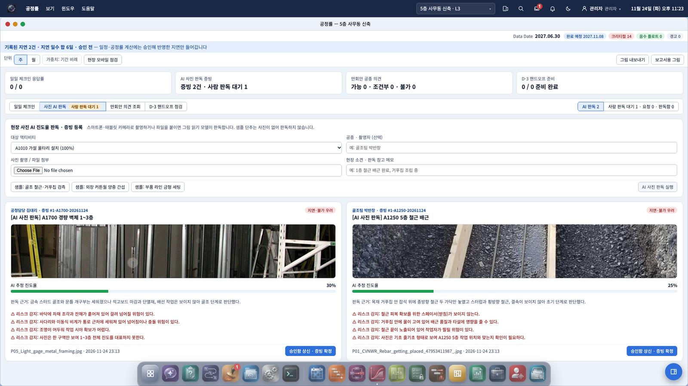
1
2
3
1현장 점검 탭 체크인 · 사진 판독 · 의견 · D-3
2판독 카드 사진이 없으면 「판독하지 않음」으로 남긴다
3요약 증빙 1건 · 사람 판독 대기 0
사람 판독 대기
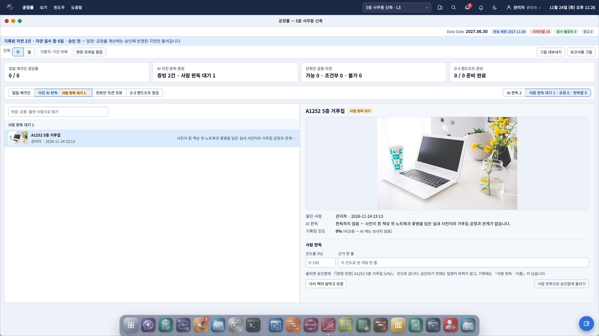
1
2
1대기 목록 AI 가 읽지 못한 사진이 쌓인다(지금 0건)
2사람 판독 사진을 고르면 진도율과 근거 한 줄 → 승인함
사진을 읽되, 못 읽으면 숫자를 붙이지 않고 관리자에게 넘긴다.
ChronOS · .EXE-THON 2026
07 · 확장성
하나의 엔진이 세 방향으로 넓어진다
날짜 엔진과 에이전트 한 바퀴는 그대로 둔다. 분야는 외부 자료로, 기능은 앱으로, 사람은 문자와 전화로 넓힌다.
① 분야로 · 29쪽
다른 산업과 직무
완료일정이 있고 작업이 이어져 있고 변동이 잦은 일이면 구조가 같다. 분야마다 볼 외부 자료만 켜고 끈다.
R&D 실증 본 시연 · 건설·생산 시연 · 9개 분야
② 앱으로 · 30쪽
OS 에 앱을 붙인다
원가, 도면 검토, 품질, 구매 앱을 붙이면 같은 WBS 위에서 일정·원가·물량·진도가 이어지고, 에이전트가 전체를 관리한다.
새 앱은 폴더 하나와 도구 등록으로 붙는다
③ 사람으로
다른 조직이 들어온다
중소 연구기관·시공사·협력사 비싼 일정 도구 없이 대화 한 줄로 시작 앱이 없는 담당자 문자와 AI 전화로 한 바퀴에 참여 발주처·전문기관·감리 승인 기록, 버전, 통화 근거가 보고 자료
시간과 비용이 줄어든다
옮겨 간 것을 아는 때
지금 · 주간 회의(최대 7일 뒤)
ChronOS · 변동 직후
헛수고가 될 가속
지금 · 당긴 뒤에 안다
ChronOS · 당기기 전에 「5일 중 1일」
빠진 인허가
지금 · 설치하려던 날 안다(사례: 과제 7개월 연장)
ChronOS · 일정을 짤 때 법령 근거와 함께
담당자 확인
지금 · 전화, 기록 없음
ChronOS · 40초 통화, 답마다 근거
300억 원 공공 공사에서 하루는 지체상금 1,500만 원이다. 옮겨 간 것을 일주일 일찍 알면, 그 일주일 동안 싸게 쓸 수 있는 방법이 아직 남아 있다.
알려진 한계
실제 현장 운영 검증 전이다. 시연 숫자는 가상 일정에서 엔진이 낸 값이다. 국내 자재 단가(철근·시멘트 등)는 Liner Premium Data 에 없어 국제 금속 시세로 대신한다. 실시간 통화 음성은 Gemini Live 를 쓰고, 카카오 알림톡은 연결만 있다.
ChronOS · .EXE-THON 2026
07 · 확장성 · ① 분야로
R&D 실증 말고도, 완료일정이 있는 모든 일
완료일정이 있고, 작업이 서로 이어져 있고, 변동이 잦은 일이면 구조가 같다. 엔진과 한 바퀴는 그대로 쓰고 분야마다 볼 외부 자료만 켜고 끈다. R&D 실증은 본 시연으로, 건설과 생산은 다른 일정 사례로 시연까지 했고, 나머지는 처음 보는 분야의 묶음을 즉석에서 만드는 기능으로 받는다.
분야
완료일정
좌우하기 쉬운 것
R&D·실증 (본 시연)
과제 종료일
성능 시험, 실증특례·인허가, 실증 운전
건설 (시연)
준공일
골조, 외장, 장납기 자재
생산 (시연)
납기
금형, 설비 보수, 원자재
플랜트 정기 보수
재가동일
장납기 부품, 검사, 크레인
조선·해양
인도일
블록 탑재, 기자재 입고
반도체·배터리 라인 셋업
양산 시작일
장비 반입, 유틸리티, 인증
신제품 개발
출시일
시제품, 인증 시험, 금형
IT 시스템 구축
오픈일
데이터 이관, 연동, 검수
행사·전시 · 매장 출점
개막일 · 오픈일
대관, 시공, 운송, 인허가
건설: 5층 사무동 신축(가상) 공정표
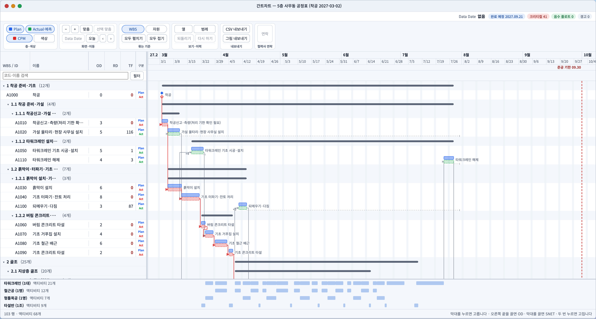
생산: 설비별로 묶은 간트
설정: 분야별 외부 자료 켜고 끄기
분야가 바뀌면 바뀌는 것
볼 외부 자료 묶음(법령, 시세, 업체, 학술) 용어와 작업 계층의 예시 위험 규칙(동절기 타설, 장비 반입, 인증 시험 같은 것) 처음 보는 분야는 질문지로 물어 이 묶음을 그 자리에서 만든다
그대로인 것
날짜 엔진(CPM, 자원, 지연 영향, 당김 효과) 관리 포인트를 다시 뽑는 한 바퀴 승인함, 4겹 하네스, 버전 담당자 연락(문자, AI 전화)과 근거 기록
ChronOS · .EXE-THON 2026
07 · 확장성 · ② 앱으로
앱을 붙일수록 에이전트가 프로젝트 전체를 관리한다
ChronOS 는 OS 라서, 필요한 프로그램을 앱으로 붙이면 에이전트가 바로 도구로 쓴다. 모든 앱이 같은 WBS 작업 코드를 쓰기 때문에 일정, 원가, 물량, 진도가 하나로 이어진다.
1도면을 읽으면 물량이 나온다 도면 검토 앱이 산출한 물량이 같은 작업 코드로 들어간다.
2물량이 일정이 된다 기간을 물량과 생산성으로 다시 계산하고, 크리티컬 패스를 다시 본다.
3물량이 돈이 된다 물량에 단가를 곱해 예산을 고치고, 지연과 만회안마다 드는 돈을 함께 본다.
4에이전트가 전체를 관리한다 한 군데의 변화가 일정, 원가, 진도 어디에 닿는지 묶어 알리고 승인함에 올린다.
도면 한 장이 바뀌면 예시 · 원가와 도면 검토 앱을 붙였을 때
1도면 검토
개정 도면을 읽고 배관 물량이 늘어난 것을 산출한다.
2스케줄
늘어난 물량만큼 설치 기간을 다시 잡고, 크리티컬 패스가 옮겨 갔는지 본다.
3원가
물량 × 단가로 예산을 고치고, 만회안마다 더 드는 돈을 함께 낸다.
4에이전트 → 사람
일정·원가·물량의 변화를 한 장으로 묶어 승인함에 올린다. 사람은 한 번에 결정한다.
붙이는 조합
생기는 것
스케줄 + 원가 관리
WBS 로 이어 일정·원가·진도(프로그레스)를 한 번에 관리한다. 계획 대비 진도와 돈을 같이 본다.
+ 도면 검토
도면에서 나온 물량이 스케줄의 기간과 원가의 금액에 함께 반영된다. 설계 변경의 영향을 바로 안다.
+ 현장 진도 (있음)
현장 점검의 공정률이 실적 진도와 기성으로 들어가, 계획·실적·비용을 같은 화면에서 견준다.
에이전트
각 앱을 도구로 쓰며 변화 하나가 어디에 닿는지 끝까지 따라가고, 결정은 사람에게 묶어서 올린다.
원가 관리·도면 검토 앱은 앞으로 붙일 계획(설계)이다. 지금 있는 앱: 스케줄, CPM, 간트, 공정률·현장 점검, 승인함.
ChronOS · .EXE-THON 2026
08 · 만든 사람과 규정
공정표로 판단해 온 사람이 직접 만들었다
참가자 건설·플랜트 현장 PM
국내외 건설·플랜트 현장에서 공정표를 두고 일정과 만회 결정을 맡아 온 사람이 직접 만들었다.
규정
Liner API 핵심 사용(제4조 1항) 한 바퀴의 판단에 Liner Model, 근거에 Liner Search. 기간 내 신규(제4조 2항) 11-19 새 저장소에서 처음부터 만들었다. 가상 데이터(제5조) 일정, 계정, 협력사, 주소록은 가상, 사진은 공개 라이선스. 시연 통화는 시험 통화 녹음이며 실제 번호로 걸지 않았다.
보안
API 키는 암호화해 저장하고 끝 4자리만 보인다. 전화번호와 키는 로그에 남기지 않는다. 저장소 추적 파일 비밀 검사 통과(11-25).
직접 돌려 보기 · 한 줄 설치
Docker 와 Node 없이 터미널 한 줄로 설치하고 띄운다. 준비물은 uv 하나다(Python 은 uv 가 받는다).